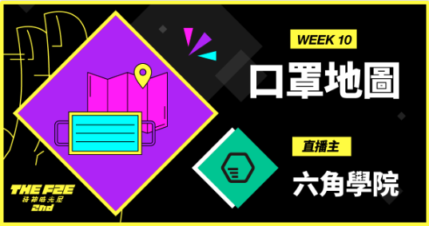
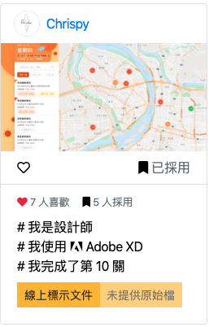
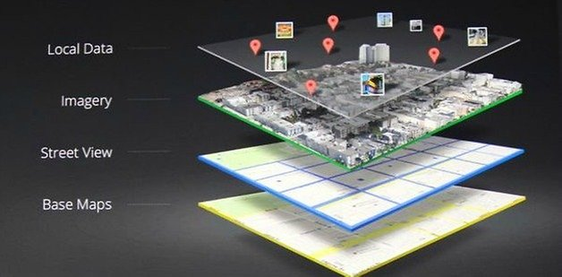
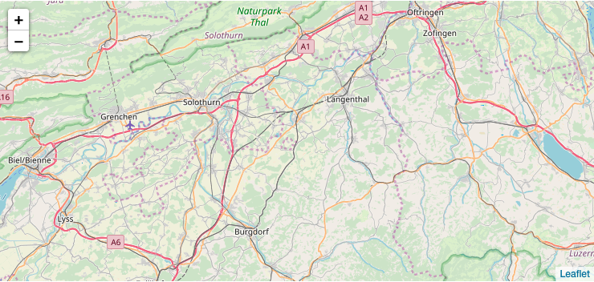
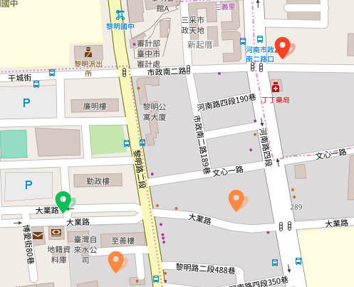

成果 & 程式碼
Introduction & 前言
之前有寫一系列的地下城文章，原本其實在去年 The F2E 活動想要在最後打一篇文章結尾的，結果出了車禍Ｑ，也導致那時候很多版沒切完。接觸前端一年多了，每每看到有活動還是會想參與，雖然常常因為工作或是作息打斷，但我想在當中獲得的才是最珍貴的。
The F2E 的活動(註1)其實是為期九週的一系列活動(相關介紹請點我)，去年是第二次舉辦了，那為什麼會有第10週呢？而且現在才出來。其實這都跟武漢肺炎有關，相信看到標題的人八成都能猜到為什麼有這一關卡了，當中其實也包含了 科技防疫｜自製「超商口罩地圖」的工程師：地圖上線6小時，我收到60萬Google帳單，當然還有最一開始發起黑客松活動得零時政府…等。
六角學院的校長為了方便大家投稿，就直接選定在這個平台推出第10關了，一看到想想能練習切版又能幫助人這機會難得，當下就打定主意這次絕對要完成，還好地圖之前有碰過一點點，雖然當中還是踩了幾個坑。
這次我覺得最困難的應該還是在資料的 Filter 塞選了，如何在下關鍵字的時候塞選出想要的結果又不會照成效能上的緩慢，這邊會在研究並且改進。
註1：The F2E 第二屆是由 六角學院 x Adobe Xd Taiwan 聯名舉辦的活動，當中的前端 & UI 修練精神時光屋其實和勇闖地下城差不多，特定的關卡都會有特定需要完成的條件，比較特別的是這邊最一開始你能選擇要在UI組出生還是前端工程出生，如果選擇後者，你就能等待UI組的畫面產出，然後擇一去切版，這個活動並沒有限制完成才能提交，所以單純只有切版也是可以過關的。

Summary & 摘要
每關都有特定的條件需要達成，如果只有切完版面也是可以的。
【特定技術】我可以在 Google Map 、或文字列表上看到所有賣口罩的廠商，以及廠商的休息時間。
【特定技術】我可以看到離自己最近的廠商剩餘的口罩數量。
【特定技術】我可以看到頁面提醒，自己今天的身分證字號是否能買口罩，如下圖規則。
關於畫面
這次沒有想太多就挑了一個版面來切，主要還是在地圖的部分，因為之前大概有做過地圖，稍微有點頭緒。雖然錯過六角的 The F2E 第十關直播，但是超佛的六角還是有把直播影片及講義上傳至Youtube，感恩SeaFood嘆讚SeaFood。

設計稿連結請點我
這邊沒有做 RWD，應該會於日後補上…
2/13更：已經補上 RWD，但是目前手機版效能還是很差，還會想辦法改進Q，請有使用的大大們手下留情。
關於地圖

首先你必須了解地圖的一些概念，在上圖中你會看到，地圖其實是很多東西疊起來的，並不是一整張完好的地圖，在這邊我們會做到最基本的幾件事情。
找到你的地圖套件，這邊使用 Vue Leaflet
找到你要的圖資，這邊使用免費開源的 Openstreetmap
帶入你的參數並且在地圖上顯示出資訊
安裝你愛的套件吧！
底盤要先穩
我們必須要先安裝 leafLet 套件，不管你是用 CDN 或是 NPM 都可以，這邊我使用 NPM 安裝，安裝完成後引入套件。
1 | // 引入地圖 |
之後在你的 HTML 上使用它。
1 | <template lang="pug"> |
再來要到設定的地方加上你的圖資，可能會是 Openstreetmap 或是 Google Map 也可能是 mapbox。
1 | data() { |
url 就是我們要設定圖資的地方，另外其他相關的設定都可以使用 v-bind 綁在 component 上，這就是 Vue 的魅力啦～你只需要處理好資料部分就好了。

然後你會看到一張地圖出來了，但是蝦咪都沒有，因為你還沒加上 Marker，或是一些套件。
開始著色吧
接下來就可以開始加上標籤，Vue 的使用方式比較簡單，就是在 HTML 加上一個 Tag 之後使用 v-for 就可以把 Marker 印上去了，不過這邊不知道是我的問題還是拿到的 API 經緯度本來就是對調的，在我打 API 拿到資料後自己又透過 reverse() 去把他對調回來，不然座標就全都跑到北極去了。
1 | <template lang="pug"> |
要特別注意的是官方有提到必須到 Main.js 加上下面的程式碼，以防預設圖片跑掉。
1 | /* leaflet icon */ |
但是這邊我們可以使用自己的圖片，然後可以在 HTML 上用三元運算去判斷目前要給哪一張圖片。
1 | data() { |

Conclusion & 結論
其實這次的地圖沒有什麼大太的難處，主要就是研究套件然後加上套件，但是往往最不怎麼樣的東西，卻能幫助最大，希望在大家慌亂的時候，能用自己所學，幫助其他人。
在參加 The F2E 的時候其實好幾關都偷懶了，切完版面而已，最近雖然工作變忙了，但是能在工作中找到自己的興趣並且能讓自己成長就算熬夜也要完成。這次花了兩個半夜，雖然口罩已經搶到翻，而且換成衛生紙跟衛生棉，但還是不能錯過這個練習的好時機，已經天亮了，該去補眠了。
最後讓我們一起祈禱並且盡自己最大的能力幫助彼此，渡過這一次的難關，加油，不管是任何正在努力付出的人，我們一起加油！
然後還是要呼籲！不要囤積口罩衛生紙衛生棉，大腦是很好的東西，拜託！
參考網站
- 六角講義
- Vue2Leaflet
- qweghj1245 — qweghj1245
*巴哈姆特 舒壓用*